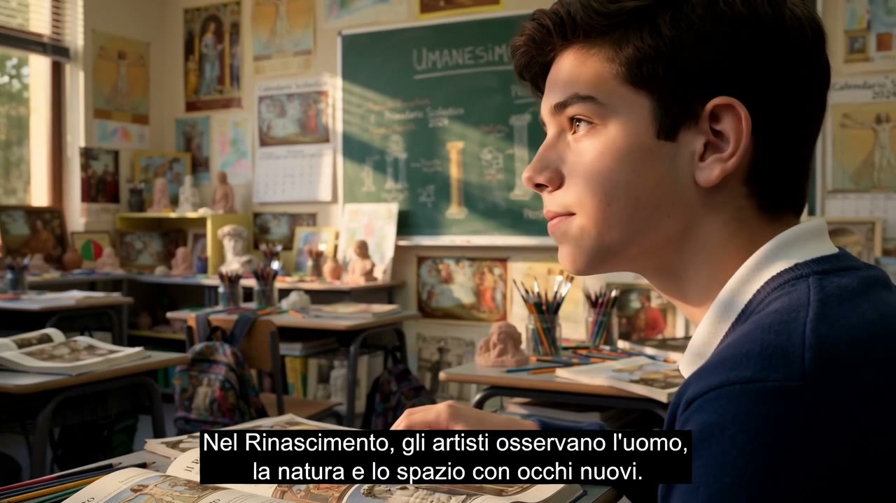

ZORIX ORIGINAL · DOCUMENTARIO ULTRABREVE DIDATTICO
L'UOMO AL CENTRO
Da Brunelleschi a Leonardo: l'arte cambia il modo di vedere.
Un viaggio tra Umanesimo e Rinascimento: dalla scoperta della prospettiva nelle ricerche di Filippo Brunelleschi al nuovo modo di osservare il mondo di Leonardo da Vinci. Un documentario ultrabreve sull'arte, la ragione e la conoscenza.
Guarda il documentario ▶
IL FILM
Guarda il documentario ultrabreve
Un documentario ultrabreve originale ZORIX. La disponibilità del video dipende dal caricamento del file MP4 sul sito.
SINOSSI
Un nuovo sguardo sul mondo
Un giovane studente apre il libro di Arte e Immagine ed entra idealmente nella Firenze rinascimentale. Scopre come Brunelleschi studi la prospettiva, come Masaccio usi la profondità nella pittura e come Leonardo unisca arte e scienza. Alla fine ritorna in classe con una risposta: il Rinascimento ha cambiato il nostro modo di osservare il mondo.
Il documentario utilizza strumenti di generazione audiovisiva assistita da intelligenza artificiale.